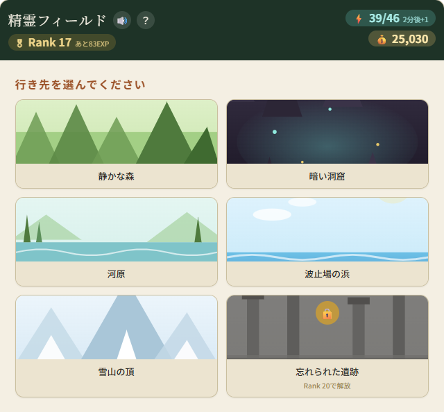
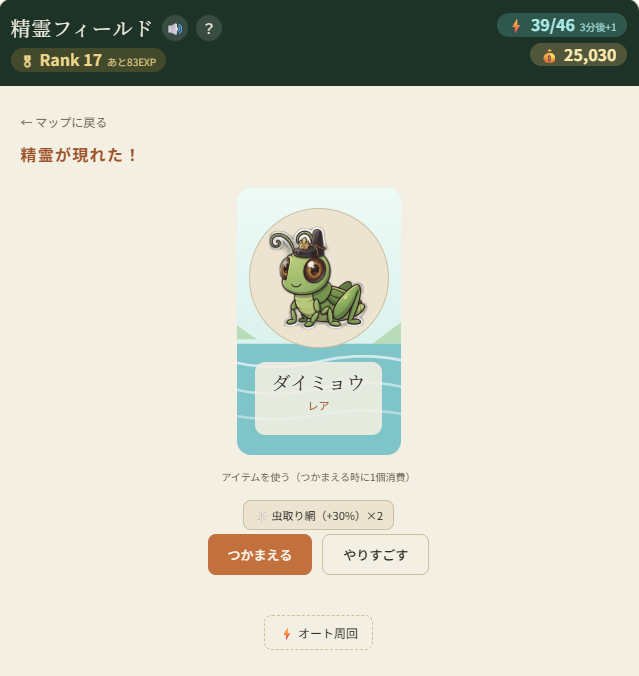
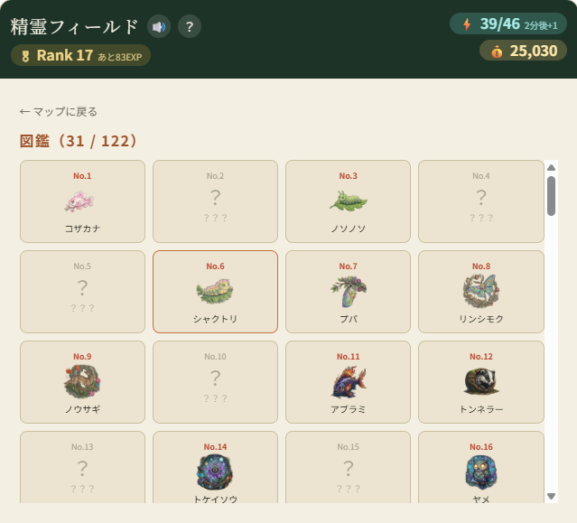
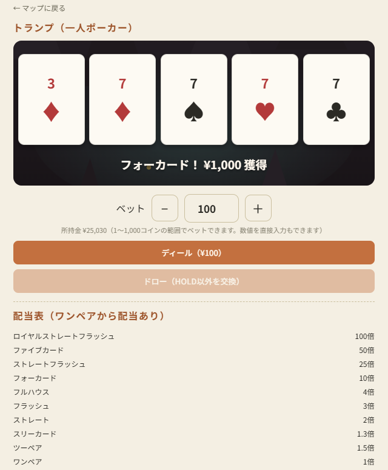
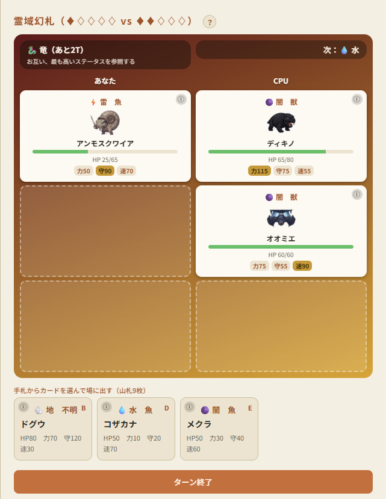

Spirit Trek -精霊フィールド- は、フィールドを巡って精霊を探し、捕らえ、育てていくブラウザゲームです。集めて育てることがゲームの中心で、じっくり長く遊べるように作っています。
森・洞窟・水辺など、性質の異なるフィールドを巡って精霊を探索。罠や派遣を駆使して、多くの精霊たちとの出会いを集めていきます。
捕らえた精霊はレベルを重ねるごとに強くなり、一定の条件で進化。同じ種族でも、育て方によって歩む道が変わることもあります。
Rankを上げると挑戦できる、育てた精霊で戦うカードバトル。霊域が刻一刻と移り変わる中、参照するステータスも特殊能力の発動も表情を変える、やり込み要素です。
探索からおまけの霊域幻札まで、いくつかの場面を並べています。






ブラウザひとつで、インストール不要。ダウンロードしたファイルを開くだけで冒険が始まります。
ふりーむ！から入手できます。ファイルを解凍し、HTMLファイルをブラウザで開くだけで起動します。
マップから土地を選び、精霊を探索。見つけた精霊は罠や道具で捕獲していきます。
集めた精霊はランクを上げて育成。じっくり長く遊べる作りになっています。